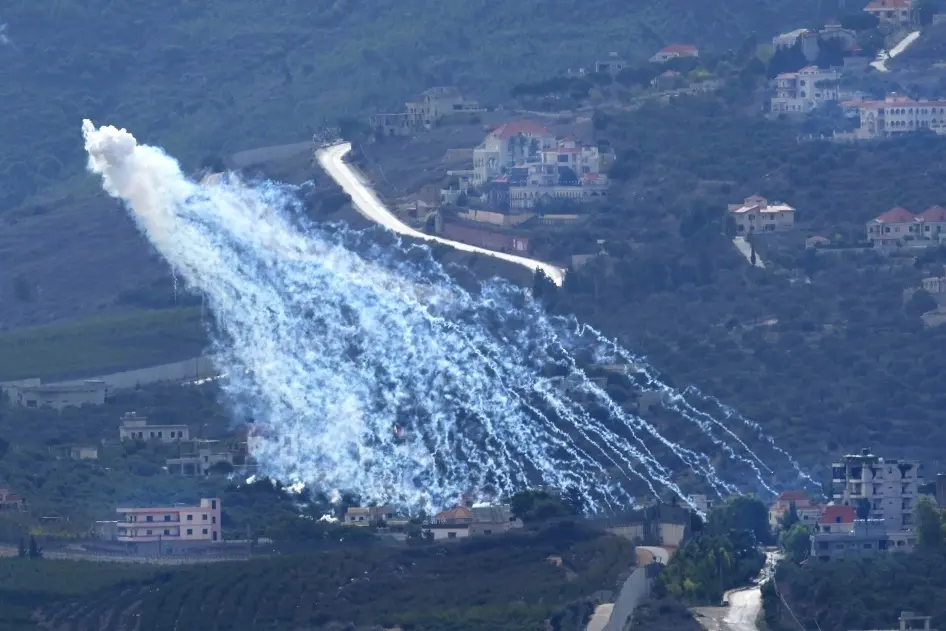
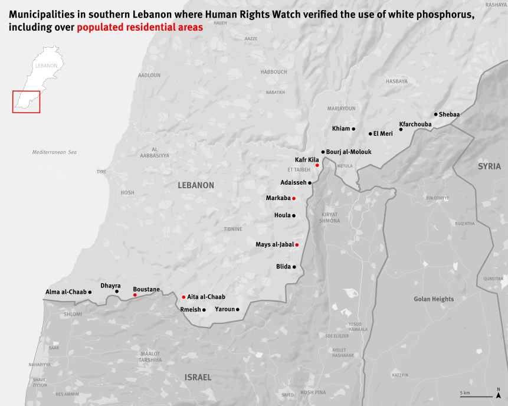

Airburst Munitions Used Unlawfully in Populated Areas

(Beirut) – Israel’s widespread use of white phosphorus in south Lebanon is putting civilians at grave risk and contributing to civilian displacement, Human Rights Watch said today. Human Rights Watch verified the use of white phosphorus munitions by Israeli forces in at least 17 municipalities across south Lebanon since October 2023, including 5 municipalities where airburst munitions were unlawfully used over populated residential areas.
White phosphorus is a chemical substance dispersed in artillery shells, bombs, and rockets that ignites when exposed to oxygen. Its incendiary effects inflict death or cruel injuries that result in lifelong suffering. It can set homes, agricultural areas, and other civilian objects on fire. Under international humanitarian law, the use of airburst white phosphorus is unlawfully indiscriminate in populated areas and otherwise does not meet the legal requirement to take all feasible precautions to avoid civilian harm.
“Israel’s use of airburst white phosphorus munitions in populated areas indiscriminately harms civilians and has led many to leave their homes,” said Ramzi Kaiss, Lebanon researcher at Human Rights Watch. “Israel forces should immediately stop using white phosphorus munitions in populated areas, especially when less-harmful alternatives are readily available.”
Human Rights Watch interviewed eight south Lebanon residents and verified and geolocated 47 photos and videos from south Lebanon posted on social media or shared directly with researchers indicating the use of white phosphorus munitions. In five municipalities, photos and videos show airburst munitions containing white phosphorus landing on top of residential buildings in the southern Lebanese border villages of Kafr Kila, Mays al-Jabal, Boustane, Markaba, and Aita al-Chaab.
The mayor of Boustane said that two people from the village had to be rushed to the hospital as a result of asphyxiation from inhaling white phosphorus smoke following the attack on October 15. “These are civilians, who were both in their houses,” the mayor said. “One was a member of the municipality, and the other was a farmer.”
People told Human Rights Watch that the use of white phosphorus in populated areas in south Lebanon contributed to the displacement of residents from several villages at the Lebanon-Israel border.
Lebanon’s Ministry of Public Health said that, as of May 28, exposure to white phosphorus had injured at least 173 people since October. Human Rights Watch did not obtain evidence of any burn injuries resulting from the use of white phosphorus munitions but heard accounts indicating possible respiratory damage.
“The most severe effects of white phosphorus are the dermal or skin effects, which can include second and third degree burns that can lead to very significant, deep necrotic and full thickness burns,” said Dr. Tharwat Zahran, a medical toxicologist and assistant professor of emergency medicine at the American University of Beirut. “Exposure to white phosphorus smoke could [also] lead to acute upper respiratory damages including shortness of breath, fast breathing, [and] coughing, but it could also have delayed effects, [including] chemical pneumonitis, which might require hospitalization and respiratory support through a machine.”
Israel’s widespread use of white phosphorus in south Lebanon highlights the need for stronger international law on incendiary weapons, Human Rights Watch said. Protocol III of the Convention on Conventional Weapons is the only legally binding instrument dedicated specifically to incendiary weapons. Lebanon is party to Protocol III, while Israel is not.
Protocol III applies to weapons that are “primarily designed” to set fires or cause burns, and thus excludes certain multipurpose munitions with incendiary effects, notably those containing white phosphorus. In addition, it has weaker regulations for the use in “concentrations of civilians” of ground-launched incendiary weapons – like the ones used in Lebanon – than air-dropped incendiary weapons, even though they produce the same horrific injuries.
“Concentrations of civilians” is defined broadly to encompass populated areas ranging from villages to refugee camps to cities. Human Rights Watch and many countries have long called for closing these loopholes in Protocol III and creating international norms that better protect civilians from the harm caused by incendiary weapons.
At a national level, Israel should prohibit all use of airburst white phosphorus munitions in populated areas because it puts civilians at risk of indiscriminate attacks. There are available alternatives to white phosphorus in smoke shells, including some produced by Israeli companies, such as the M150 smoke projectile, which the Israeli army has used for its forces in the past as an obscurant, a means of hindering the visibility of its forces. These alternatives can have the same effect and dramatically reduce the harm to civilians.
Lebanon should promptly file a declaration with the International Criminal Court (ICC), enabling the investigation and prosecution of grave international crimes within the court’s jurisdiction on Lebanese territory since October 2023.
“Stronger international standards against the use of white phosphorus are needed to ensure these weapons do not continue to endanger civilians,” Kaiss said. “Israel’s recent use of white phosphorus in Lebanon should motivate other countries to take immediate action toward this goal.”
